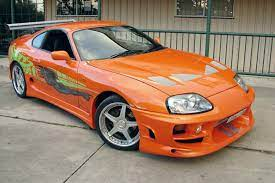

Welcome to the thrilling world of Supras, where power meets precision, and adrenaline takes the driver's seat. Our virtual showroom is a gateway to the heart-pounding symphony of horsepower and cutting-edge design that defines the iconic Supra lineage. Whether you're a speed enthusiast, a design connoisseur, or someone on the quest for the ultimate driving experience, buckle up as we embark on a journey through the legacy and innovation that make Supras the epitome of automotive excellence. Get ready to be captivated by the allure of speed, the roar of the engine, and the unmistakable charisma of Supras – where every curve tells a story of unrivaled performance and style.

Unleash the Beast:
Ignite your passion for the extraordinary with our showcase of Supras that redefine the boundaries of performance. Each image encapsulates the raw power and untamed spirit within these masterpieces on wheels. Brace yourself for a visual journey through the sleek contours and dynamic features that make Supras an embodiment of automotive prowess.
Sculpted Elegance in Motion:
Witness the intersection of artistry and engineering as our gallery unveils Supras in their full glory. These images showcase the seamless fusion of aerodynamic elegance and muscular design, creating a symphony of form and function. Immerse yourself in the allure of Supras, where every detail is a stroke of automotive brilliance.
Revolutionary Innovation:
Dive into the avant-garde world of Supras, where groundbreaking technology meets unparalleled performance. Our images capture the essence of innovation, featuring Supras that push the boundaries of what's possible on the road. Explore the cutting-edge features that make each Supra a testament to Toyota's commitment to redefining driving experiences.
Track-Tested, Street Approved:
Join us in celebrating the dual nature of Supras – born on the racetrack, destined for the streets. These images encapsulate the racing DNA infused into every Supra model, highlighting their track-tested capabilities and street-approved style. Immerse yourself in the thrilling dichotomy of speed and sophistication that defines the Supra driving experience.
How it all started
Toyota's iconic Supra model has a rich history that traces back to the late 1970s. The first-generation Supra, introduced in 1978, was actually an offshoot of the Toyota Celica. Initially known as the Celica Supra, it featured a more powerful inline-six engine and distinct styling cues. However, it wasn't until the third generation, starting in 1986, that the Supra truly evolved into a standalone model. This marked the beginning of the legendary Supra we know today. Toyota collaborated with luxury division Lexus on the development of the fourth-generation Supra, incorporating cutting-edge technology and design.
The inception of the Toyota Supra dates back to 1978 when it emerged as a distinct model, initially named the Celica Supra. Born from the Toyota Celica, this first-generation Supra set itself apart with a more powerful inline-six engine and unique design elements. However, it was in 1986, with the introduction of the third generation, that the Supra truly came into its own as a standalone sports car. This transformative step marked the genesis of the Supra's iconic lineage, setting the stage for subsequent generations of high-performance excellence.
The Toyota Supra has earned its reputation not only for its lineage but also for its rapid technological advancements. After its standalone debut in 1986, the Supra demonstrated a swift evolution in subsequent generations. Technological leaps were particularly evident in the transition from the third to the fourth generation in 1993 when the Supra underwent a comprehensive overhaul. Collaborating with Lexus, Toyota incorporated cutting-edge features, enhancing both performance and sophistication. This continuous commitment to innovation has positioned the Supra as a pinnacle of automotive engineering.
The Toyota Supra's legacy is deeply intertwined with its diverse range of builds, showcasing the adaptability and customization potential that enthusiasts cherish. Across generations, the Supra has been a canvas for various tuning and modification projects, with aftermarket parts and performance upgrades pushing its limits. Whether it's the classic tuning scene of the 1990s, where enthusiasts experimented with turbocharger upgrades and body kits, or the modern era that embraces cutting-edge technology, Supra builds have always been a testament to the car's versatility.
The Japanese Domestic Market (JDM) has played a pivotal role in shaping the identity of the Toyota Supra. Initially designed and manufactured for the Japanese market, the Supra's JDM roots underscore its authentic performance heritage. JDM Supras often feature unique specifications, exclusive trims, and specialized engineering tailored to the preferences of Japanese enthusiasts. These models, with their distinct characteristics and precision engineering, have become highly sought after by collectors and fans worldwide. The JDM influence extends beyond the car itself.
The Toyota Supra is not just a sports car; it's a treasure trove of intriguing facts that highlight its unique journey in the automotive world. Did you know that the name "Supra" is derived from the Latin word meaning "above" or "to surpass," reflecting the car's commitment to excellence? Additionally, the fourth-generation Supra, particularly the 1993-1998 models, gained fame for its role in "The Fast and the Furious" franchise, solidifying its status as a pop culture icon. Another fascinating tidbit is that the Supra shares its engine with the legendary Toyota 2JZ-GTE, a powerplant.
The inaugural entry of the Toyota Supra into competitive racing marked a pivotal moment in the car's history. In the early 1980s, the Celica Supra, a precursor to the standalone Supra, ventured into motorsports, laying the foundation for the sports car's future success on the track. Notably, the Celica Supra achieved acclaim in the European Touring Car Championship (ETCC) during the 1982 season. Under the Team Tom's banner, the Celica Supra demonstrated its racing prowess, securing victories and solidifying Toyota's presence in the competitive motorsports arena.
The modern Toyota Supra stands as a testament to automotive innovation, boasting cutting-edge technology that propels it into the realm of high-performance excellence. Co-developed with BMW, the latest A90 generation Supra is equipped with a potent turbocharged inline-six engine, delivering a thrilling driving experience. Its advanced chassis dynamics, adaptive suspension, and precise steering contribute to an unparalleled level of handling and responsiveness. The integration of BMW's expertise is evident in the Supra's sophisticated infotainment system and driver-assistance features.